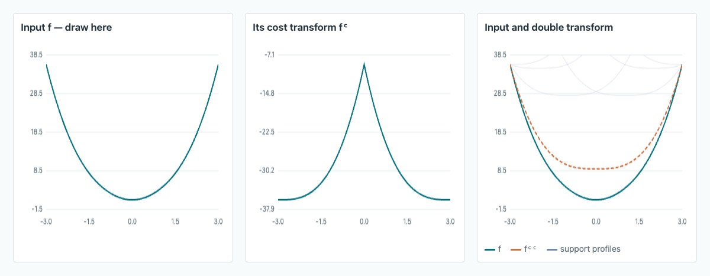
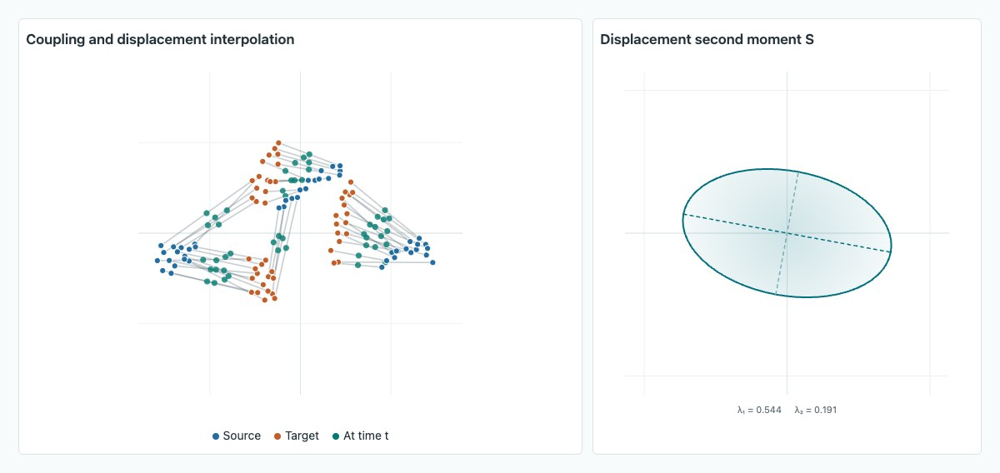
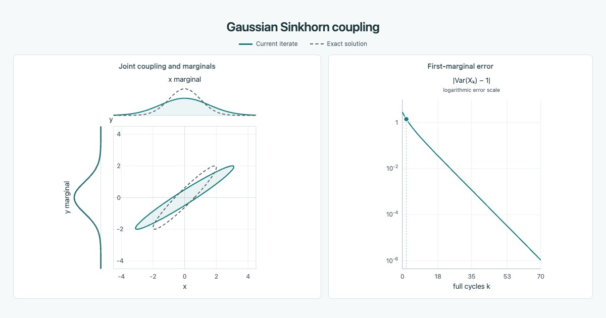
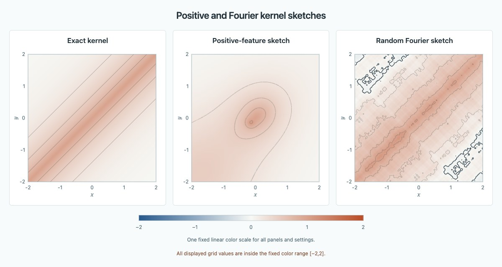

These forthcoming posts are shared as alpha previews. Their content may evolve before the finished articles appear on the blog.
Find a post
Search published articles and forthcoming alpha previews together.
Search titles, keywords, and summaries. Accents and capitalization do not matter.
Loading search… The article list remains available below.
Optimal transport

Duality & geometryc-transform as a generalized Legendre transform
Closure under averaging for cost-concave functions, with counterexamples for power costs and a positive result on the sphere.

Spectral geometry & robust transportSpectral Wasserstein distances
Transport costs based on displacement second moments, with robust and dynamic formulations and examples using Schatten gauges.

Entropic transport & convergenceSinkhorn on Gaussians: an exact convergence rate
An explicit covariance recursion and convergence rate for Gaussian Sinkhorn, including the dependence on entropic regularization.
 One-dimensional transport
One-dimensional transportWasserstein distance without quantiles
A triangle-area identity expresses quadratic transport directly through cumulative distribution functions.
Flows and geometry
Probability and sampling
 Central limit theorem
Central limit theoremFunctions of measures
Optimization and approximation

Matrix positivity & nonnegative featuresDoubly nonnegative and completely positive matrices
A five-cycle gives a matrix with nonnegative entries and eigenvalues but no nonnegative Gram factor. Gaussian scale mixtures give kernels with positive features.
Approximation & nonlinear operationsUniversal approximation from one nonlinearity
A version of Stone–Weierstrass using stability under a continuous non-affine operation instead of multiplication.
 Norm-steepest descent
Norm-steepest descentConditioning of Non-Euclidean Gradient Descent
Two quadratics share their eigenvalues but not their coordinate geometry. Compare scaled sign descent with ordinary gradient descent.